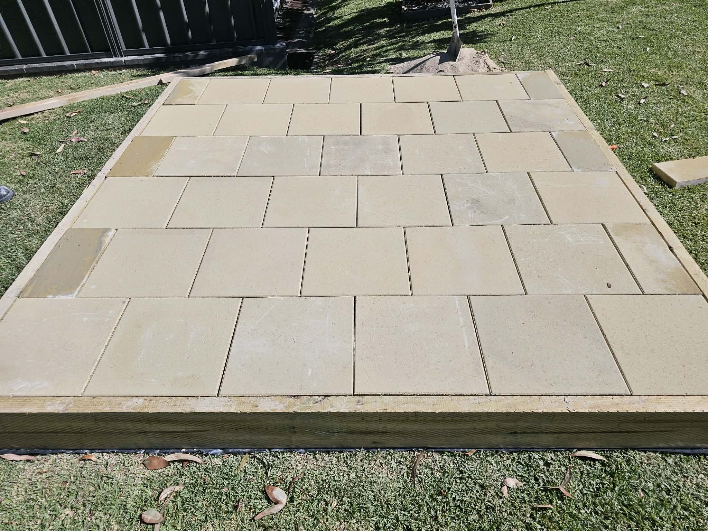

Seasonal Garden Maintenance for Illawarra Yards
A simple seasonal checklist for lawns, beds, hedges and outdoor timber in our local climate.
Spring growth tasks
For Illawarra homeowners, spring growth tasks is one of the decisions that shapes how your outdoor space looks and performs for years. Our team works across Wollongong, Shellharbour, Kiama and surrounding suburbs every week, so the advice below is grounded in real local installs — not generic national copy.
When we quote, we assess access, ground conditions, privacy goals and how the landscaping element connects to the rest of your property. That is why we do not publish fixed prices online: two blocks in the same suburb can need very different materials and labour.
If you are comparing options, bring photos and approximate measurements. We will recommend a system that balances appearance, durability in coastal conditions, and the way you actually use your yard.
Summer watering
summer watering is one of the decisions that shapes how your outdoor space looks and performs for years. Our team works across Wollongong, Shellharbour, Kiama and surrounding suburbs every week, so the advice below is grounded in real local installs — not generic national copy.
When we quote, we assess access, ground conditions, privacy goals and how the landscaping element connects to the rest of your property. That is why we do not publish fixed prices online: two blocks in the same suburb can need very different materials and labour.
If you are comparing options, bring photos and approximate measurements. We will recommend a system that balances appearance, durability in coastal conditions, and the way you actually use your yard.
Autumn prep
autumn prep is one of the decisions that shapes how your outdoor space looks and performs for years. Our team works across Wollongong, Shellharbour, Kiama and surrounding suburbs every week, so the advice below is grounded in real local installs — not generic national copy.
When we quote, we assess access, ground conditions, privacy goals and how the landscaping element connects to the rest of your property. That is why we do not publish fixed prices online: two blocks in the same suburb can need very different materials and labour.
If you are comparing options, bring photos and approximate measurements. We will recommend a system that balances appearance, durability in coastal conditions, and the way you actually use your yard.
Winter pruning
winter pruning is one of the decisions that shapes how your outdoor space looks and performs for years. Our team works across Wollongong, Shellharbour, Kiama and surrounding suburbs every week, so the advice below is grounded in real local installs — not generic national copy.
When we quote, we assess access, ground conditions, privacy goals and how the landscaping element connects to the rest of your property. That is why we do not publish fixed prices online: two blocks in the same suburb can need very different materials and labour.
If you are comparing options, bring photos and approximate measurements. We will recommend a system that balances appearance, durability in coastal conditions, and the way you actually use your yard.
Fence-line vegetation control
fence-line vegetation control is one of the decisions that shapes how your outdoor space looks and performs for years. Our team works across Wollongong, Shellharbour, Kiama and surrounding suburbs every week, so the advice below is grounded in real local installs — not generic national copy.
When we quote, we assess access, ground conditions, privacy goals and how the landscaping element connects to the rest of your property. That is why we do not publish fixed prices online: two blocks in the same suburb can need very different materials and labour.
If you are comparing options, bring photos and approximate measurements. We will recommend a system that balances appearance, durability in coastal conditions, and the way you actually use your yard.
Ready for a free local quote?
Tell us your suburb and project type — fencing, landscaping or both. We respond within 24 hours across the Illawarra.
Get a free quote Browse products